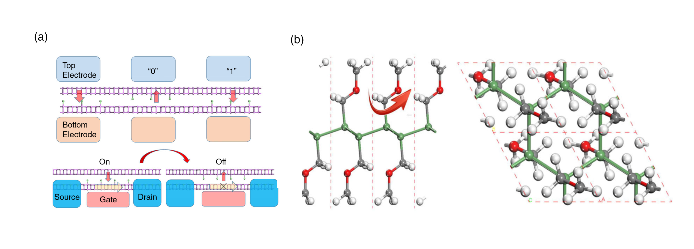

二维材料的磁性质
二维材料不仅拥有很多新的电子学性质，还拥有很多新奇的磁学性质。同非二维材料一样，二维材料的磁性是来源于电子轨道之中的未配对电子。由泡利不相容原理以及洪特规则可得，最先填充一个电子壳层的若干电子自旋方向倾向于相同，这些电子将优先占据能量较低多数多数自旋态而使局域原子显出磁矩。局域磁矩按照一定规律排列组合，即可在宏观尺度上表现出磁性。二维磁性材料像三维磁性材料一样，也可以分为铁磁性、亚铁磁性、反铁磁性、顺磁性、抗磁性。铁磁性二维材料具有自发极化磁矩，在外场作用下可以实现磁矩方向的翻转，在外场撤出后仍然保留比较大的剩余磁化强度，有着广泛的应用前景与研究价值。
目前发现的二维材料大多不具备铁磁性，二维材料之中产生铁磁性的重要一点是在二维材料内部产生未配对电子，进一步使二维材料的电子态密度产生自旋劈裂，即不同自旋方向的电子态密度出现不对称。从二维材料的能带结构上面看来，二维铁磁材料可以分为三种：铁磁半导体、铁磁导体、铁磁金属。铁磁半导体在发生自旋能级分裂时没有被费米面穿过，与半导体一样存在带隙。铁磁导体中发生自旋分裂的两种自旋方向能级被费米面穿过，没有带隙。铁磁半金属有一个自旋方向的态密度被费米面穿过，没有带隙，另一个自旋方向没有被穿过，存在带隙保持着绝缘体或者半导体的性质，对一个自旋方向的电子来说是导体，对另一种自旋方向的电子来说是绝缘体，这种半金属半绝缘体的性质可以用来选择性过滤某种自旋方向的电子。为增强铁磁性，通常在二维材料之中，一般采取载流子掺杂的方式，提高费米面附近电子密度，进而引发电子自旋分裂产生铁磁性。

(a)卤素原子在磷烯双层之间的迁移形成垂直二维平面的电极化，通过外加电场使卤素原子在两层间的迁移实现电极化的反转，可以用来制作磁读电写存储器与多铁场效应管 (b)添加$CH{2}OCH{3}-$后的锗烯层，通过添加后的极性官能团在平面内的旋转实现电极化方向的转换